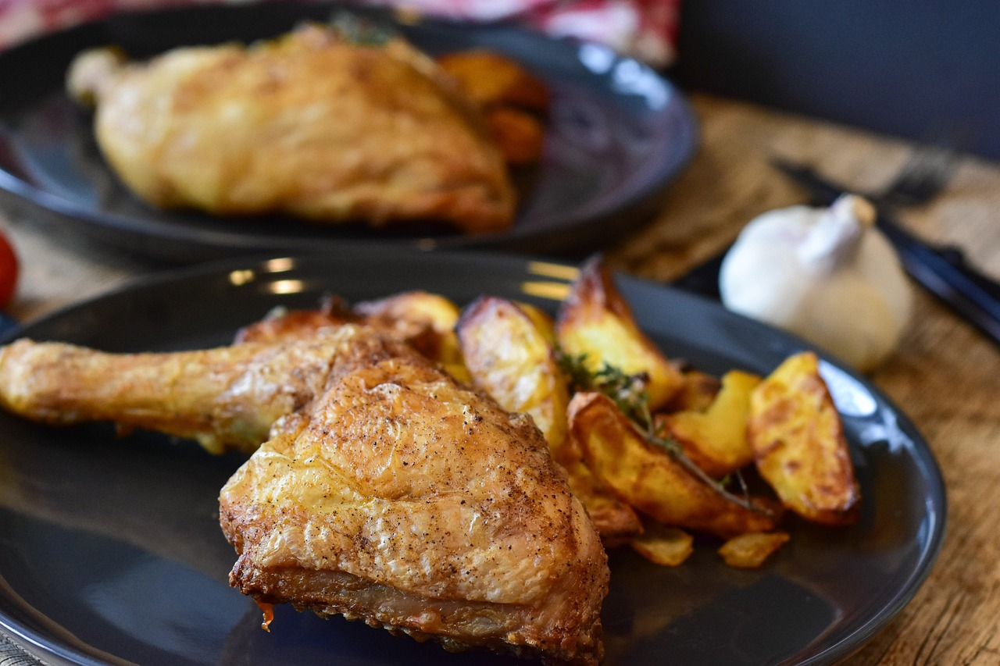

Home
Lemon Garlic Chicken

Photo by RitaE
A delicious Lemon Garlic Chicken recipe that can be ready to eat in under thirty minutes, including prep time!
This Lemon Garlic Chicken dish is a great dinner time meal for everyone. Be eating in just thirty minutes or less!
It is quick to make, flavorful and delicious.
Ingredients
- 2 tablespoons butter
- 3 skinless, boneless chicken breast halves
- 1 1/2 teaspoons salt or to taste
- 1 1/2 teaspoons ground black pepper or to taste
- 2 tablespoons garlic powder, divided
- 1 lemon, juiced
Steps
- Gather all ingredients
- Melt butter in a skillet over medium-high heat
- Season chicken with salt and pepper; place in melted butter
- Cook chicken, flipping frequently, until browned, about 5 minutes
- Sprinkle 1 tablespoon garlic powder over chicken; cook for 2 minutes
- Flip and sprinkle remaining 1 tablespoon garlic powder on the second side; cook for 2 minutes
- Pour lemon juice over each side of chicken and cook until no longer pink in the center, 5 to 10 minutes more
- Plate and enjoy!